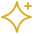

Draw your own
Draw with your mouse, finger, or stylus. Your sketch will shrink to the same size as the other stars.
Each option is shown at its actual size beside your project title.

Draw with your mouse, finger, or stylus. Your sketch will shrink to the same size as the other stars.
The pencil sketch is currently the default.
Back to portfolio